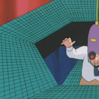
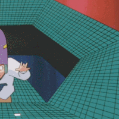

1년 전 영상임
1년 전 영상임
agi가 가능하다는 연구자가 더 많고 금액 규모도 비교도 안 되게 훨씬 큼. 난제 해결 등 실질적 성과도 나오고 있음. 미중이 국운 걸고 올인 중이고 다른 국가들도 가능한 여력 내에서 총력전 중임.
불가능하다가 더 가능성이 높았으면 미중이 저러지도 않음. 난제 풀어서 상 받은 수학자도 나 직업 잃으면 소설이나 써야겠네 이러고 있음. 이미 인간의 삶에 막대한 영향을 주고 있고 발전 속도도 이미 예상하던 범위를 벗어난 것이 사실임.
그래서 AI 발전 속도 늦추자는 이야기가 경제적으로도 안보, 인류 존속의 리스크 차원에서도 논의가 나오는 거고 물론 안 늦추겠지. 미중 체제 경쟁이라 서로 말 안 들을 거거든.
응 그건 니 뇌피셜. 니 논지들이 열정적이긴 한데 너무 빈약해. "AI는 다들 중요하게 생각한다”, "다들 올인하고 있다"이 제대로된 증거라고 보냐?
AAAI가 2025년 3월에 발표한 「AI 연구의 미래에 관한 회장 패널 보고서(Presidential Panel on the Future of AI Research)」에 포함된 설문에서 약 475명의 응답자 중 **76%**가 "현재의 AI 접근법을 확장(scaling up)하는 것만으로 AGI를 달성할 가능성은 낮거나 매우 낮다" 라고 답했음
'확장하는 것만으로' 확장하는 방법만 쓰지 않음. 무슨 나이가 먹으면 죽는다 수준의 질문에 대한 설문 통계를 근거라고 가져오고 있나.
이제 다른 방향으로도 연구 개발을 해야한다는 내용이지 저게 ai 개발 투자 무용론임?
그건 뭔 띨빡스러운 논리지.
현재 AI 회사들의 기반인 LLM의 다음 토큰 예측만으로 AGI 불가능 하다고 연구자들 설문조사가 나온건데. 이해가 잘안됨?
AAAI는 학계대상 설문조사라고 봐도 무방하고(기업에서 90%+ 논문이 나오는데)에다 2025년 3월에 나온거보면 뭐 o1도 못봤겠는데..?
그리고 진지하게 1년반전 설문을 컨센선스라고 들고온거임?
1. 일단 AAAI 급 이상 학회에 기업 논문이 90% 이상이라는건 개소리고
2. 1년반이면 별 오래전도 아니구만. 지금은 내가 대학원에 없어서 학계에서 멀어졌지만 드라마틱하게 달라졌을거라고 생각안함.
1. 응답자비율 학계 구성원이 67퍼에다가 학생이 20퍼였는데 뭘보고 하는소리임?
https://aaai.org/wp-content/uploads/2025/03/AAAI-2025-PresPanel-Report-FINAL.pdf
2. 아... okay~~~!
뭔소리여 니가 기업에서 90%+ 논문이 나온다매. 뭘 말하고싶은거지.
혹시 AI 기업이 연구 선도한다고 생각하는거?
이미 ai로 인해 대규모 실업자 양산했고 각 분야에서도 엄청난 성과 냈고 발전 속도도 미쳤고 국내 금융권까지 ai 악용한 거로 털리는 판에 허상이니 뭐니 하는게 얼마나 공허한 주장인가.
ai가 만능신이 되서 무지개빛 미래가 확정적으로 온다는 주장을 하고 싶은게 아님. ai에 가까운 국가가 모든 부를 독점하고 지옥을 가져오기에 충분한 발전속도다. 실제로 그렇게 흘러가고 있고 지금 인공지능에서 좀만 더 발전하고 로봇이 더 현실에 투입되면 과거랑은 완전 다른 세상이 될 거임.
이 상황에 무용론 논하는 게 얼마나 우습냐. 니가 논하는 agi의 수준이 어느 정돈데? 뭐 딸깍하면 은하에 도달하는 신을 바라고 있냐? 난 인간들 지옥으로 밀어넣기에 충분한 발전속도고 확정적으로 가능하다고 보는데? 이미 사무직 실업률부터 미쳤는데?
범용적으로 전 분야를 잡아먹고 있는데 agi가 왜 안 된다고 하나? 이미 대학 박사과정 학생 수준이나 신입 직원 수준은 넘었다는 평가인데
너같은 좆문가가 갑갑한게, 내미는 증거들이 “AGI가 어떻게 만들어지는지”가 아니라 표면적인 "주변 정황"에 대한 얘기들뿐임.
기술적인 부분을 이해못하는걸 감안해도 논지가 너무 병신같음
너가 계속 얘기하는게 “AI가 대단하고 중요하다”의 근거지 “AGI가 온다”의 근거가 아님.
추세 Extrapolation, 좁은 성과의 일반화, 이해관계 있는 사람들의 말, 인과 불분명한 통계.
지금 구조가 어떻게 범용 지능까지 가는지에 대한 설명은 하나도 없음.
구조를 이해 못 해도 발전하고 있는게 현실인데 왜 현실을 부정하냐는 이야긴데? 내 말은
돈을 엄청나게 써대니까 발전은 하겠지. 근데 AGI에 회의적인 연구자들도 엄청 많다는거지.
대부분 사람들은 대기업들 공포마케팅에 놀아나겠지만.
llm 구조 이해도 안 되고 뻥이란 소리 나온 건 맨 처음부터 나왔던 거고 몇 년 지나서 처한 현실은 ai 때문에 실직자, 실업률 폭등했고 ai가 사람의 자리를 대체했는데 각 분야 산업이 잘 돌아가거나 연구는 더 빨라졌다는 게 현실이다.
agi로 반중력 만들고 공간 접어서 은하 끝에 가는게 agi가 아니고 그냥 범용적으로 인간의 일을 대체하게 되면 그게 agi 초입인 거라서 이미 현실화가 된 것이 사실인데 이해고 나발이고 뭐가 중요함?
그래서 통계상 ai 때문에 일자리 줄어든 게 사실이 아니냐고 맞잖아? 계속 발전하고 있고
인류를 천국으로 보내주는 인공지능 신이 아니라 그냥 인간 옆에서 지옥 보내는 agi는 충분히 이미 실현된 수준이라고 모든 사회, 경제 통계가 증명하는데 그 지옥에서 살아남으려면 ai를 독점해야하는데 어쩌냐? 이미 현실인데?
ai 등장 전인 고작 몇 년 전에 회계사 신입이 밥 빌어먹을 거란 걱정하면 정신병자였어 부자들 미중 정부는 개병신이라 수백조는 우습게 투자하는 줄 아냐? 이미 인간을 디스토피아 지옥으로 보낼 수 있는 수준의 agi는 이미 현실에 실존한다니까?
그렇게 믿고싶으면 믿어. 다만 AGI가 어떤 의미로 통용되는지부터 좀 찾아봐라.
글고 계속 논거가 뇌피셜 사회정황 위주인데 그런식으로 하면 별로 설득력 없는 중학생 수준이라는것도 좀 깨달아라
그래서 니가 하고싶은말이 당최 뭔데?ㅋㅋ 태클만 걸고 있노
특무새 새끼들이 좆도 모르면서 증거같지도 않은 증거 내밀고 AGI는 곧 온다 외쳐대는데 색안경 빼고 보면 분위기는 다르다는거.
그만하셈 “ 1년반이면 별 오래전도 아니구만.”에서 대화할 가치가 없어짐
학계 분위기가 그렇다는데 아니라고 박박 우기는 수준 ㅋㅋ
ㅋㅋㅋ하여간 AI 기술이라고는 1도 모르는 좆문가들이 뭘 알겠냐 에휴
거품타고 돈이나 벌어야겠다 ㅂㅇ


ㅇㅇ 그래야겠다.
"AI 기업이 연구 선도한다고 생각하는거?" 에서도 그냥 AI 잠깐 다루다 뒤쳐진 대학원생 느낌남
그거 같아 책 1권 읽은 사람의 신념 ㅋㅋ
AI 연구에 발만 담궈봐도 그런 개소리 못할텐데ㅋㅋㅋ
진짜 개나소나 좆문가 뇌피셜 돌리네ㅋㅋㅋ 개드립 수준ㅋㅋㅋ
저게됐으면 지금쯤 상온 초전도체 나왔어야함
ㅈㄹ똥싸는 소리 하고 있네
대부분의 대형 기업에서 ai비용 감당 못하고 gg치고 토큰, 모델 제한 개빡세게 걸어놨음
마치 전기를 발견했으니 이제 세상은 끝이다 같은 수준의 소리임
인프라를 고려 안한 소리
그건 아직 AI비용이 인건비에 비해 비싼가 아닌가 간당간당해서 그럼.
다음 세대 정도면 AI를 선택 많이 할듯.
그리고 토큰값 감당 못하면 경쟁에서 밀리겠지. 그렇게 살아남은게 현재의 미국 빅테크임. 물론 지금 과열은 비정상인게 사실이긴 하지만.
토큰비용이 1년마다 얼마나 싸지는지 보면 이런말 못 할텐데 엄청 근시안적이네.
기후위기, 인구소멸, 3차세계대전, ai위기 등등 좆됐다고는 하는데 그래서 뭐 당장 땅굴 파고 방공호라도 만들라는건가 싶고 그냥 들소떼 무리에 껴서 단체로 낭떠러니 떨어지면 같이 뒤지는거고 윗대가리 형님들이 잘 이끌어주면 콩고물이나 받아먹고 사는거지
곧 터미네이터 온다
LLM 구조 상 AGI 불가능하다는 연구자들도 많음 (예시로 르쿤).
실제로 개선 속도가 느려지고 있고 단순히 n년전에 이랬다 수준으로 간단하게 치부할 문제가 아님